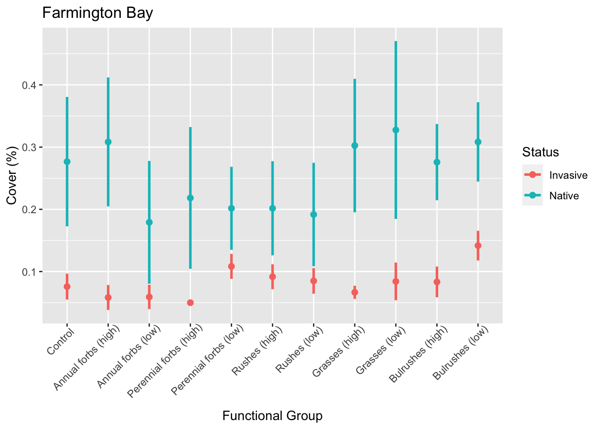
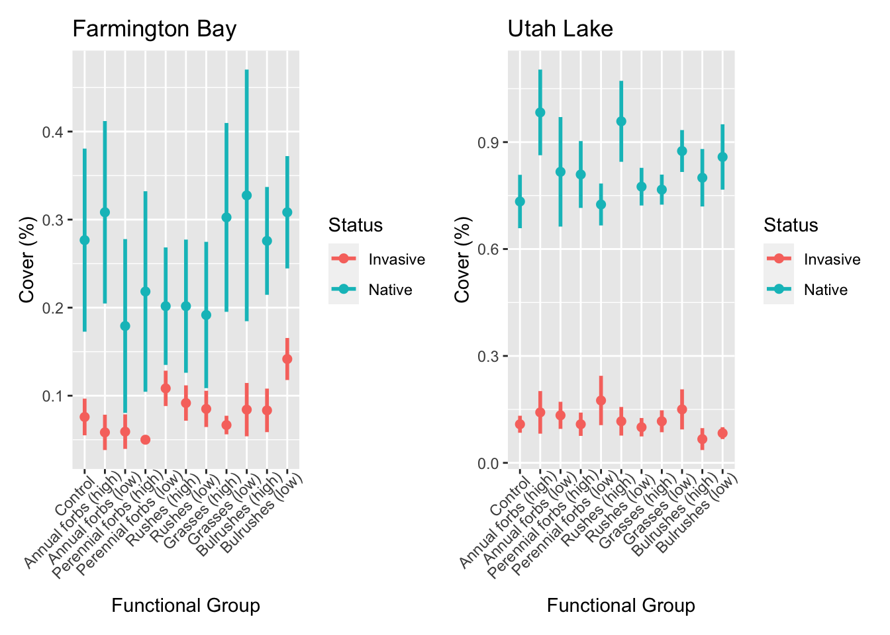

Chapter 4 Visualizing my data
4.1 Overview of Chapter
Now that my data is clean, I can start to make graphs to find the story! For my thesis, I am interested in seeing differences in invasive plant cover as a result of the seed mix used in the plot. To do this, I will make a graph that includes invasive and native cover by seed mix.
4.2 Organizing the data
Currently, I have one column for each species seen in the field. However, I want to graph the total cover for all native and invasive plants seen in the plots. But how do I know which ones are native? To start, I need to change my data from wide format to long format and make a new column that identifies which species is native and which is invasive. Plus, I only need to know this information for the last sampling date.
#load packages
library(ggplot2)
library(tidyverse)
graph_data <-fb %>%
select(Block, Plot, Group, Density, Date, PHAU, Cheno, Typha,
BOMA, DISP, EUMA, SYCI, LEFA, SCAC, BICE, BIFR, EUOC, MUAS, SCAM, RUMA,
RUST, Unk_Bulrush, SARU, Tamarisk) %>% #remove unnecessary columns
filter(Date == "2022-09-16") %>% #only the last sampling date
pivot_longer(
cols = 6:24,
names_to = "SPP",
values_to = "Percent_Cover"
) %>% #pivot so that all species names are in one column
mutate(Status =
dplyr::if_else(
SPP %in%
c("PHAU", "Typha", "RUST", "Tamarisk"),
"Invasive", "Native")) %>% #make a new column for species status
group_by(Block, Plot, Status) %>% #group by the plot and species status
summarise(PC = sum(Percent_Cover, na.rm = TRUE)) #calculate totals## `summarise()` has grouped output by 'Block', 'Plot'. You can override using the
## `.groups` argument.#Check out the results
head(graph_data)## # A tibble: 6 × 4
## # Groups: Block, Plot [3]
## Block Plot Status PC
## <int> <fct> <chr> <dbl>
## 1 1 1H Invasive 0.05
## 2 1 1H Native 0.1
## 3 1 1L Invasive 0.15
## 4 1 1L Native 0.1
## 5 1 2H Invasive 0.05
## 6 1 2H Native 0.2This all looks good! Now we have summed values of all the native and invasive cover for each plot for the last sampling date. Let’s go ahead and graph!
4.3 Graphing the data
Now, let’s graph up the values we calculated for invasive and native cover at each plot. For the first order of business, I want to replace all the names of the plots from my research codes to codes that will make sense to a wider audience.
graph_data <- graph_data %>%
mutate(Plot = case_when(
Plot == "1H" ~ "Perennial forbs (high)",
Plot == "1L" ~ "Perennial forbs (low)",
Plot == "2H" ~ "Rushes (high)",
Plot == "2L" ~ "Rushes (low)",
Plot == "3H" ~ "Grasses (high)",
Plot == "3L" ~ "Grasses (low)",
Plot == "4H" ~ "Bulrushes (high)",
Plot == "4L" ~ "Bulrushes (low)",
Plot == "5H" ~ "Annual forbs (high)",
Plot == "5L" ~ "Annual forbs (low)",
Plot == "C" ~ "Control",
TRUE ~ "PROBLEM"
))
#Double check
graph_data %>%
group_by(Plot) %>%
tally()## # A tibble: 11 × 2
## Plot n
## <chr> <int>
## 1 Annual forbs (high) 12
## 2 Annual forbs (low) 12
## 3 Bulrushes (high) 12
## 4 Bulrushes (low) 12
## 5 Control 12
## 6 Grasses (high) 12
## 7 Grasses (low) 12
## 8 Perennial forbs (high) 12
## 9 Perennial forbs (low) 12
## 10 Rushes (high) 12
## 11 Rushes (low) 12After double checking our data, nothing came up as a “PROBLEM” so all our calculations look good!
Now we can finally graph it. Let’s use points with error bars, color coded depending on whether the value is for native or invasive species.
fb_plot <- graph_data %>%
mutate(Plot = factor(Plot, #set the order I want
levels = c("Control", "Annual forbs (high)",
"Annual forbs (low)", "Perennial forbs (high)",
"Perennial forbs (low)", "Rushes (high)",
"Rushes (low)", "Grasses (high)",
"Grasses (low)", "Bulrushes (high)",
"Bulrushes (low)"))) %>%
ggplot(aes(x = Plot, y = PC, color = Status)) + #x is plot, y is cover
stat_summary(aes(group = Status), #calculate means of the total cover
fun = mean, geom = "point", size = 2) +
stat_summary(aes(group = Status, width = 0), #calculate error bars
fun.data = mean_se, geom = "errorbar", size = 1) +
labs(x = "Functional Group", y = "Cover (%)", title = "Farmington Bay") + #labels
theme(axis.text.x = element_text(angle = 45, hjust = 0.9))
fb_plot
Now we can do it all again with the Utah Lake data.
graph_data2 <- ul%>%
select(Block, Plot, Group, Density, Date, PHAU, BOMA, BICE, CYER, RUMA,
Cheno, SCAC, SCPU, SCAM, DISP, RACY, ASIN, ALPR, CYDA, Unk_Bulrush, BY, SYCI,
EUOC, TYPHA, Tamarisk, POPE, POFR, SAAM, BASC, LASE) %>%
filter(Date == "2022-09-16") %>%
pivot_longer(
cols = 6:30,
names_to = "SPP",
values_to = "Percent_Cover"
) %>%
mutate(Status =
dplyr::if_else(
SPP %in%
c("PHAU", "TYPHA", "RUST", "Tamarisk", "ALPR", "CYDA", "BY",
"BASC", "LASE"),
"Invasive", "Native")) %>%
group_by(Block, Plot, Status) %>%
summarise(PC = sum(Percent_Cover, na.rm = TRUE))## `summarise()` has grouped output by 'Block', 'Plot'. You can override using the
## `.groups` argument.graph_data2 <- graph_data2 %>%
mutate(Plot = case_when(
Plot == "1H" ~ "Perennial forbs (high)",
Plot == "1L" ~ "Perennial forbs (low)",
Plot == "2H" ~ "Rushes (high)",
Plot == "2L" ~ "Rushes (low)",
Plot == "3H" ~ "Grasses (high)",
Plot == "3L" ~ "Grasses (low)",
Plot == "4H" ~ "Bulrushes (high)",
Plot == "4L" ~ "Bulrushes (low)",
Plot == "5H" ~ "Annual forbs (high)",
Plot == "5L" ~ "Annual forbs (low)",
Plot == "C" ~ "Control",
TRUE ~ "PROBLEM"
))
ul_plot <- graph_data2 %>%
mutate(Plot = factor(Plot, #set the order I want
levels = c("Control", "Annual forbs (high)",
"Annual forbs (low)", "Perennial forbs (high)",
"Perennial forbs (low)", "Rushes (high)",
"Rushes (low)", "Grasses (high)",
"Grasses (low)", "Bulrushes (high)",
"Bulrushes (low)"))) %>%
ggplot(aes(x = Plot, y = PC, color = Status)) + #x is plot, y is cover
stat_summary(aes(group = Status), #calculate means of the total cover
fun = mean, geom = "point", size = 2) +
stat_summary(aes(group = Status, width = 0), #calculate error bars
fun.data = mean_se, geom = "errorbar", size = 1) +
labs(x = "Functional Group", y = "Cover (%)", title = "Utah Lake") + #labels
theme(axis.text.x = element_text(angle = 45, hjust = 0.9))
ul_plot
4.4 Combine
For my final output, I would like these two graphs side by side. Let’s use patchwork to combine them.
library(patchwork)
fb_plot + ul_plot
They look great!
Unfortunately, there do not appear to be any differences in native or invasive biomass as a result of seed mix. A generalized linear mixed model shows that the only significant difference is between the bulrushes and annual forbs at the Farmington Bay plots, but none of my plots are significantly different from the controls. Oh well, I guess that is how field work goes. Hopefully I will get more exciting results after my second year of monitoring!